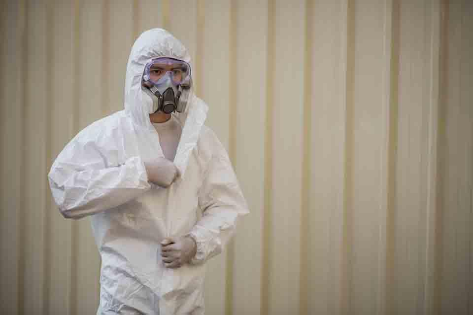

Arch Hill asbestos testing and removal — one enquiry connects you with an experienced local contractor.
Arch Hill is part of the Central Auckland area we connect with local asbestos contractors. If you’re renovating, re-roofing or demolishing in Arch Hill and you’ve found — or suspect — asbestos, submit an enquiry and an independent contractor will be in touch.
Central Auckland has some of the city’s oldest housing stock — villas, bungalows and mid-century homes that have often been extended and renovated, which is when hidden asbestos in linings, soffits, ceilings and roofing tends to be uncovered.
If you’ve hit something unexpected mid-renovation, stop work, leave the material undisturbed and submit an enquiry. Never sand, drill, scrape or water-blast materials that might contain asbestos.

Every service below is available to Arch Hill property owners through local, independent contractors.
1. Submit your enquiry for Arch Hill.
2. A local contractor contacts you to discuss the job.
3. They assess, test if needed and send an itemised quote.
4. If you proceed, the work and disposal are completed by the contractor.
Free quotes. No obligation.
Enquiries from Arch Hill and surrounding Central Auckland suburbs are welcome. Call 09 873 7082 to request a quote.
As well as Arch Hill, enquiries are accepted from these Central Auckland suburbs. See the full service area list.
This is a referral service. Enquiries from Arch Hill are passed to local, independent asbestos contractors who service the area, assess the job and provide a quote.
Cost depends on the material (roofing, cladding, soffits, ceilings), the quantity, access and disposal. A local contractor provides an itemised quote after assessing your Arch Hill property.
If your building was constructed before about 2000, testing suspect materials before any renovation, repair or demolition is strongly recommended. It is the only way to know for certain.
DIY removal is dangerous and tightly regulated. The fibres are microscopic and can stay airborne for hours, so using an experienced asbestos contractor is the safest choice.
Fill in the quote form on this page or call 09 873 7082. A local contractor will contact you to discuss the job and arrange an assessment.
Tell us about your Arch Hill property and a local contractor will arrange a free consultation and itemised quote.
Call us or request a quote — a local contractor will get back to you ASAP.
Call 09 873 7082